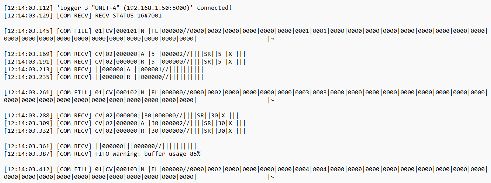

Overview
I competed in the Siemens #KicksForEdge 72-hour hackathon, collaborating with a global team to solve a real industrial automation problem: conveyor misdirection. European warehouses lose €2–5 billion/year due to misrouted parcels. Our task: transform unstructured PLC logs into a system that technicians can actually use.

Raw PLC logs with hidden faults.
Why This Problem Matters

Warehouse technicians manually sift through millions of log lines across dozens of PLCs. Unflagged errors cause conveyor arms to misroute packages without triggering alarms. These “silent” failures accumulate into enormous financial loss.
Our research showed that Germany alone reported 44,406 operational complaints in 2024 related to delayed/misdirected parcels. (Source included in slide deck)
Our Solution

log uploader

Node-RED Log Parser

OpenSearch Dashboard
We built a full pipeline using Node-RED → OpenSearch → Dashboards:
- Automated log ingestion for text/ZIP PLC logs
- Custom parser that cleans, extracts, and formats raw strings into JSON
- Device, alarm, and routing analysis to identify common failure clusters
- Interactive dashboards for non-engineers to visualize trends instantly
With our pipeline, a process that previously took technicians 7 days could now be performed in 10 minutes.
Technology Stack

✔ Node-RED – ingestion tool, drag-and-drop user interface ✔ JavaScript – parsing logic for semi-structured PLC logs ✔ OpenSearch – database + indexing engine ✔ OpenSearch Dashboards – visualization & analytics ✔ Siemens Industrial Edge – deployment & future scaling
Pipeline Architecture

The system was designed like an industrial control loop:
- Technicians upload logs (txt or zip)
- Node-RED normalizes data into structured JSON
- OpenSearch indexes the dataset
- Dashboards visualize alarms by device, frequency, severity
Future Vision

AI Chatbot Assistant
With the unified dataset, the next step is applying Edge AI models to detect anomalies before they become misdirection events. A chatbot interface over OpenSearch gives technicians instant, conversational access to system history and root-cause explanations.


.jpg)